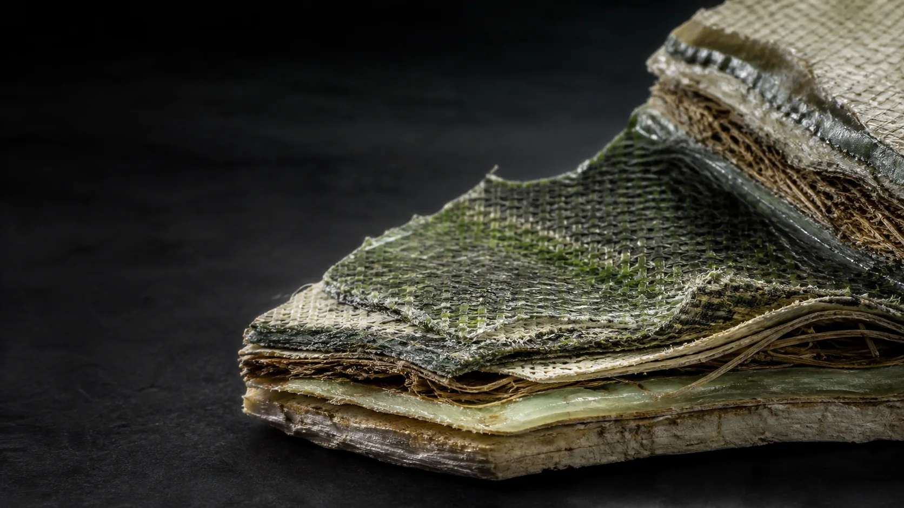
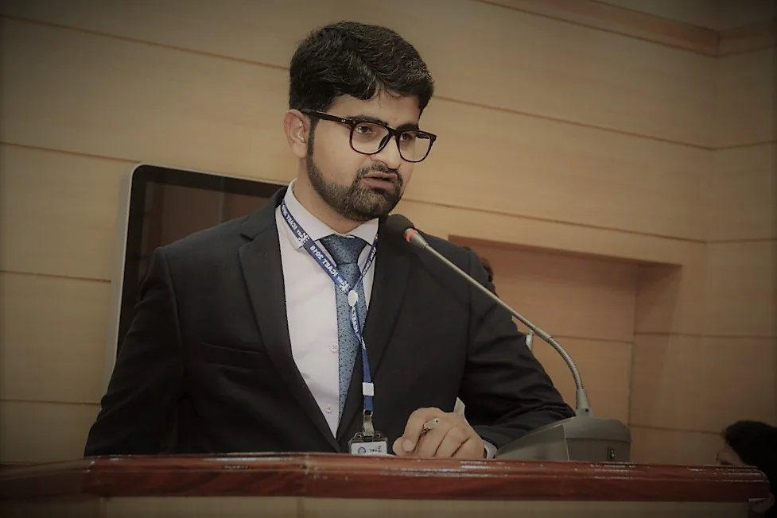

Consulting
Material strategy for complex sustainability questions.
Research-backed advisory for circular materials, textile waste valorization, project framing, technical review, and innovation roadmaps.
Explore advisory capabilities ↗Circular materials consultant · Researcher · Founder
I help universities, industries, and innovation teams turn textile and agricultural waste into better material strategies, research directions, and applied opportunities.

Profile in evidence
The intersection is the advantage
My work sits between academic rigor and implementation. I investigate materials, translate evidence into decisions, and build pathways that help circular ideas become credible projects, partnerships, products, and ventures.
What I bring
Engagements are shaped around the problem: strategic advice for direction, research collaboration for evidence, and entrepreneurial thinking for translation.
Consulting
Research-backed advisory for circular materials, textile waste valorization, project framing, technical review, and innovation roadmaps.
Explore advisory capabilities ↗Research
Research across polymer composites, protective materials, nanotechnology-enabled finishes, smart textiles, and process improvement.
See research themes ↗Enterprise
ReComp Solutions creates a vehicle for translating circular-material ideas into tangible value and cross-sector opportunity.
Discover ReComp Solutions ↗
Edited by Yasir Nawab, Ali Raza Shafqat, and Muzzamal Hussain
Publisher page ↗International Journal of Polymer Science
View DOI ↗In Circularity in Textiles
View DOI ↗Doctoral research at National Textile University
View research portfolio →
A connected career
BSc Textile Engineering
MSc Advanced Materials Engineering
Lecturer, researcher, and academic contributor
Founder & CEO, ReComp Solutions
Doctoral research and award-winning conference work
Co-editor, Textile Composites and Sustainability
Selected recognition
Awards are presented as evidence of work—not decoration. The emphasis remains on the ideas, teams, and outcomes behind them.
4th International Conference on Knowledge Based Textiles, 2025
4th International Conference on Polymers and Composites, 2024
International Conference on Sustainable Future Food Systems, 2024
DICE Awards, 2017 and 2018
Have a materials challenge?
For consulting, research collaboration, academic contribution, speaking, or startup partnership.
Start a conversation ↗